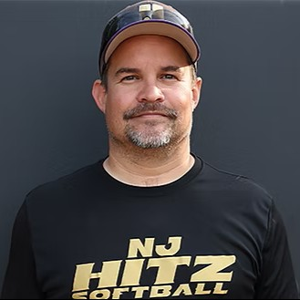

Senior Advisor
Carlos Duran
Senior Advisor • Program Culture & Development
Duran brings over a decade of experience working with high-level travel and high-school programs across New Jersey. He focuses on developing softball IQ, leadership, and a healthy, competitive environment for every athlete in the program.
- Guided multiple teams to regional and national-level events.
- Leads program culture, communication, and long-term planning.
- Supports player pathways for showcase and college recruiting.